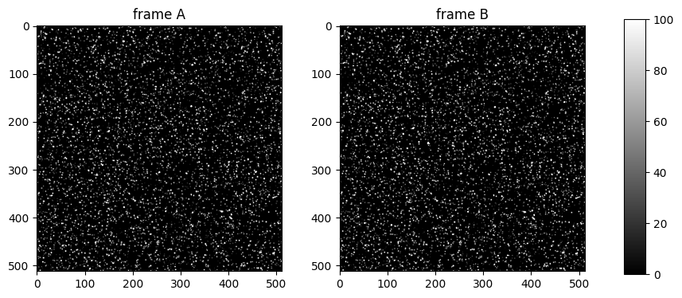
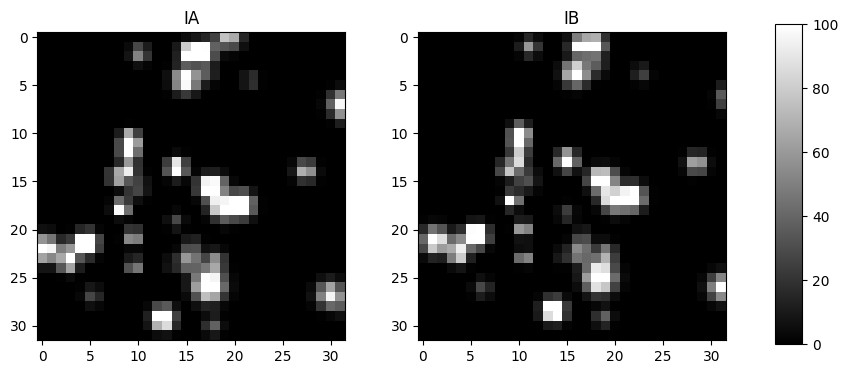
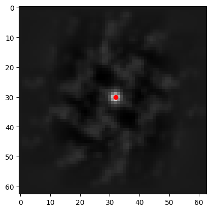
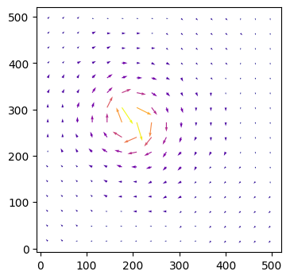
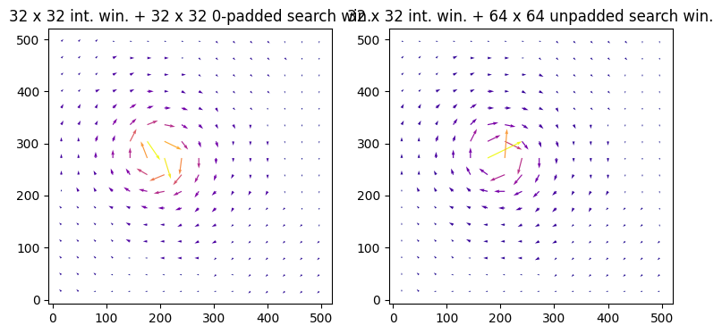

# import the standard numerical and plotting packages
import numpy as np
import matplotlib.pyplot as plt
%matplotlib inline
# import what is necessary from OpenPIV
from openpiv import tools, pyprocess, validation, filters, scaling1 Basics of PIV
“Particle” Image Velocimetry (PIV) is a non-intrusive state-of-the-art technique (Adrian 1991), (Raffel 2007) to get the velocity field of the flow being studied from images of small particles, called tracers.
It is based on image recording of the illuminated flow field using seeding particles (called tracers) which, when sufficiently small compared to the smallest characteristic length scales of the flow, are assumed to faithfully follow the flow dynamics (the degree to which the particles faithfully follow the flow is represented by the Stokes number). In practice, common sizes of the tracer particles are in the order of 5-100 microns. The entrained particles are generally made visible in a cross-section of the flow being studied by forming a coherent light sheet. In practice, the flow is illuminated twice using a laser light sheet, forming a plane where a camera is focused. The time delay between the pulses depends on the mean velocity and the image magnification. It is assumed that the tracer particles follow the local flow velocity between the two consecutive illuminations. The light scattered from the tracer particles is then imaged via an optical lens on a digital camera. The displacement of the particle images between two consecutive light pulses (respectively, frames) is determined through evaluation of the spatial cross-correlation function and image processing tools as implemented in OpenPIV.
The effectiveness of the measurement results strongly depends on a large number of parameters such as particles concentration, size distribution and shape, illumination source, recording device, and synchronization between the illumination, acquisition and recording systems (Huang 1997). An appropriate choice of the different parameters of the cross correlation analysis (e.g., interrogation area, time between pulses, scaling) will influence the results accuracy.
Using simple mathematical knowledge and existing algorithms written with Python, Numpy, Scipy, we will introduce the basics of PIV.
Note
These notebooks require the OpenPIV package (Python ≥ 3.10). If it isn’t already installed in your environment, run pip install openpiv before continuing — every notebook of this course imports it directly (e.g. from openpiv import tools, pyprocess, validation, filters, scaling).
All the images used can be found in the images directory of the repository.
1.1 How to estimate a velocity-field from a pair of grayscale particle images?
This tutorial will follow the simplest analysis path from a pair of images to the velocity field and some post-analysis. It is a simple refresher from the Lecture session.
We have downloaded sample images from a standard PIV images project, see pivchallenge
# load the images
a = tools.imread("./images/B005_1.tif")
b = tools.imread("./images/B005_2.tif")
fig, axs = plt.subplots(1, 2, figsize=(9, 4))
img = axs[0].imshow(a, vmin=0, vmax=100, cmap=plt.cm.gray)
axs[0].set_title('frame A')
img = axs[1].imshow(b, vmin=0, vmax=100, cmap=plt.cm.gray)
axs[1].set_title('frame B')
cbar = fig.add_axes([0.95, 0.1, 0.03, 0.8])
fig.colorbar(img, cax=cbar)
plt.show()
The two images show the particles at two different times. But these images are way to big and contain too many particles to manually track the movement of individual particles from one frame to the other. Instead, we can analyze small regions of interest, called interrogation windows (IW). Typically, we can start with a size of 32 x 32 pixels or smaller. Until recently, the fast algorithms used powers of 2, so the historical sizes are always powers of 2: 8, 16, 32, 64, 128, …
Let’s take the first top left windows from each image.
win_size = 32
a_win = a[:win_size, :win_size].copy()
b_win = b[:win_size, :win_size].copy()
fig, axs = plt.subplots(1, 2, figsize=(9, 4))
img = axs[0].imshow(a_win, vmin=0, vmax=100, cmap=plt.cm.gray)
axs[0].set_title('IA')
img = axs[1].imshow(b_win, vmin=0, vmax=100, cmap=plt.cm.gray)
axs[1].set_title('IB')
cbar = fig.add_axes([0.95, 0.1, 0.03, 0.8])
fig.colorbar(img, cax=cbar)
plt.show()
Again, if we try to manually track the movement of individual particles from frame A to frame B, it would be extremely time-consuming, especially for large image regions containing many particles. Manually identifying and matching every single particle would quickly become tedious and impractical for even a coarse velocity field estimation. That’s why automated methods which can efficiently analyze the displacement of all particles within interrogation windows are preferred.
Then, let’s try to find the best shift algorithmically using the principles of least squares: shift and calculate the sum of squared differences, the minimum of which should be the best shift.
def match_template(img, template, maxroll=8):
# img: input image to compare
# template: image to match against
# maxroll: max nbr of pxl to shift in each dir. Default value is 8.
best_dist = np.inf
best_shift = (-1, -1)
for y in range(-maxroll,maxroll):
for x in range(-maxroll,maxroll):
# calculate Euclidean distance
dist = np.sqrt(np.sum((img - np.roll(template, (y, x), axis=(0, 1))) ** 2))
if dist < best_dist:
best_dist = dist
best_shift = (y, x)
return (best_dist, best_shift)Let’s check that it works by manually shifting the same image (IA):
match_template(np.roll(a_win, (2, 0), axis=(0, 1)), a_win)(0.0, (2, 0))Indeed, when we find the correct shift, we get zero distance. It’s not so in real images:
match_template(b_win, a_win)(123.80226169178009, (-1, 1))Well, this is not the true displacement, but it gives a hint.
We could draw this as a vector of velocity
\[ u = \frac{\Delta x \text{ pixels}}{\Delta t} ,\qquad v = \frac{\Delta y \text{ pixels}}{\Delta t} \]
where \(\Delta t\) is the time interval (delay) between the two images (or two laser pulses).
The problem is that shifting each image and repeating the loop many times is impractical:
- For a single \(32 \times 32\) window,
maxroll=8already means testing \(16\times16=256\) candidate shifts, each one revisiting all 1024 pixels of the window — about 800000 operations just to locate one vector, and only to the nearest pixel. - The cost grows as \(O(\text{maxroll}^2)\): measured on these images, doubling
maxroll(4 → 8 → 16 → 32) roughly quadruples the time per window. A faster flow, or a larger \(\Delta t\), needs a wider search range — and the cost blows up faster than that range does.
However, one can get it by using a different matching principle, based on the property called cross-correlation (cross because we use two different images). This is an efficient computational algorithm to find out the right shift: instead of testing shifts one at a time, it evaluates the match quality at every possible shift simultaneously via the Fourier transform — which is why its cost barely depends on the search range. You can see more details here: http://paulbourke.net/miscellaneous/correlate/.
from scipy.signal import correlate
cross_corr = correlate(b_win - b_win.mean(), a_win - a_win.mean(), method="fft")
# Note that it's approximately twice as large as the original windows, as we
# can shift a_win by a maximum of its size horizontally and vertically
# while still maintaining some overlap between the two windows.
print("Size of the correlation map: %d x %d" % cross_corr.shape)
# let's see what the cross-correlation looks like
plt.imshow(cross_corr, cmap=plt.cm.gray)
y, x = np.unravel_index(cross_corr.argmax(), cross_corr.shape)
print(f"{y=}, {x=}")
plt.plot(x, y, "ro")
plt.show()Size of the correlation map: 63 x 63
y=30, x=32
The image of the correlation map shows the same result that we got manually looping. We need to substract the center of symmetry (31, 31) to get the estimated displacement.
dy, dx = y - 31, x - 31
print(f"{dy=}, {dx=}")dy=-1, dx=1We can get the first velocity field by repeating this analysis for all small windows. Let’s take 32 x 32 pixels windows from each image and do the loop:
def vel_field(curr_frame, next_frame, win_size):
ys = np.arange(0, curr_frame.shape[0], win_size)
xs = np.arange(0, curr_frame.shape[1], win_size)
dys = np.zeros((len(ys), len(xs)))
dxs = np.zeros((len(ys), len(xs)))
for iy, y in enumerate(ys):
for ix, x in enumerate(xs):
int_win = curr_frame[y : y + win_size, x : x + win_size]
search_win = next_frame[y : y + win_size, x : x + win_size]
cross_corr = correlate(
search_win - search_win.mean(), int_win - int_win.mean(), method="fft"
)
dys[iy, ix], dxs[iy, ix] = (
np.unravel_index(np.argmax(cross_corr), cross_corr.shape)
- np.array([win_size, win_size])
+ 1
)
# draw velocity vectors from the center of each window
ys = ys + win_size / 2
xs = xs + win_size / 2
return xs, ys, dxs, dysxs, ys, dxs, dys = vel_field(a, b, 32)
norm_drs = np.sqrt(dxs ** 2 + dys ** 2)
fig, ax = plt.subplots(figsize=(9, 4))
# we need these flips on y since quiver uses a bottom-left origin, while our
# arrays use a top-right origin
ax.quiver(
xs,
ys[::-1],
dxs,
-dys,
norm_drs,
cmap="plasma",
angles="xy",
scale_units="xy",
scale=0.25,
)
ax.set_aspect("equal")
plt.show()
If you’ve followed along this far, great! Now you understand the basics.
1.2 A slight variant
We can also try to use a search window larger than the interrogation window instead of relying on zero-padding. By avoiding using zero-padding around the search window, movement detection should theoretically be a bit better, assuming that the window sizes are chosen well.
def vel_field_asymmetric_wins(
curr_frame, next_frame, half_int_win_size, half_search_win_size
):
ys = np.arange(half_int_win_size[0], curr_frame.shape[0], 2 * half_int_win_size[0])
xs = np.arange(half_int_win_size[1], curr_frame.shape[1], 2 * half_int_win_size[1])
dys = np.zeros((len(ys), len(xs)))
dxs = np.zeros((len(ys), len(xs)))
for iy, y in enumerate(ys):
for ix, x in enumerate(xs):
int_win = curr_frame[
y - half_int_win_size[0] : y + half_int_win_size[0],
x - half_int_win_size[1] : x + half_int_win_size[1],
]
search_win_y_min = y - half_search_win_size[0]
search_win_y_max = y + half_search_win_size[0]
search_win_x_min = x - half_search_win_size[1]
search_win_x_max = x + half_search_win_size[1]
truncated_search_win = next_frame[
max(0, search_win_y_min) : min(b.shape[0], search_win_y_max),
max(0, search_win_x_min) : min(b.shape[1], search_win_x_max),
]
cross_corr = correlate(
truncated_search_win - np.mean(truncated_search_win),
int_win - np.mean(int_win),
mode="valid",
method="fft",
)
dy, dx = np.unravel_index(np.argmax(cross_corr), cross_corr.shape)
# if the top of the search window got truncated, shift the origin
# up to the top edge of the (non-truncated) search window
if search_win_y_min < 0:
dy += -search_win_y_min
# if the left of the search window got truncated, shift the origin
# over to the left edge of the (non-truncated) search window
if search_win_x_min < 0:
dx += -search_win_x_min
# shift origin to the center of the search window
dy -= half_search_win_size[0] - half_int_win_size[0]
dx -= half_search_win_size[1] - half_int_win_size[1]
dys[iy, ix] = dy
dxs[iy, ix] = dx
return xs, ys, dxs, dysint_win_size = np.array([32, 32])
print(f"{int_win_size=}")
assert np.all(np.array(a.shape) % int_win_size == 0)
assert np.all(int_win_size % 2 == 0)
half_int_win_size = int_win_size // 2
search_win_size = int_win_size * 2
print(f"{search_win_size=}")
assert np.all(search_win_size % 2 == 0)
half_search_win_size = search_win_size // 2
assert np.all(search_win_size > int_win_size)
print(
"max velocity that can be detected with these window sizes: "
+ f"{half_search_win_size - half_int_win_size}"
)int_win_size=array([32, 32])
search_win_size=array([64, 64])
max velocity that can be detected with these window sizes: [16 16]Making the search window larger compared to the interrogation window would allow for larger velocities to be detected.
xs_asym, ys_asym, dxs_asym, dys_asym = vel_field_asymmetric_wins(
a, b, half_int_win_size, half_search_win_size
)
norm_drs_asym = np.sqrt(dxs_asym ** 2 + dys_asym ** 2)
fig, axs = plt.subplots(1, 2, figsize=(9, 4))
axs[0].quiver(
xs,
ys[::-1],
dxs,
-dys,
norm_drs,
cmap="plasma",
angles="xy",
scale_units="xy",
scale=0.25,
)
axs[1].quiver(
xs_asym,
ys_asym[::-1],
dxs_asym,
-dys_asym,
norm_drs_asym,
cmap="plasma",
angles="xy",
scale_units="xy",
scale=0.25,
)
axs[0].set_title(
f"{win_size} x {win_size} int. win. + "
f"{win_size} x {win_size} 0-padded search win."
)
axs[1].set_title(
f"{int_win_size[0]} x {int_win_size[1]} int. win. + "
f"{search_win_size[0]} x {search_win_size[0]} unpadded search win."
)
ax.set_aspect("equal")
plt.show()